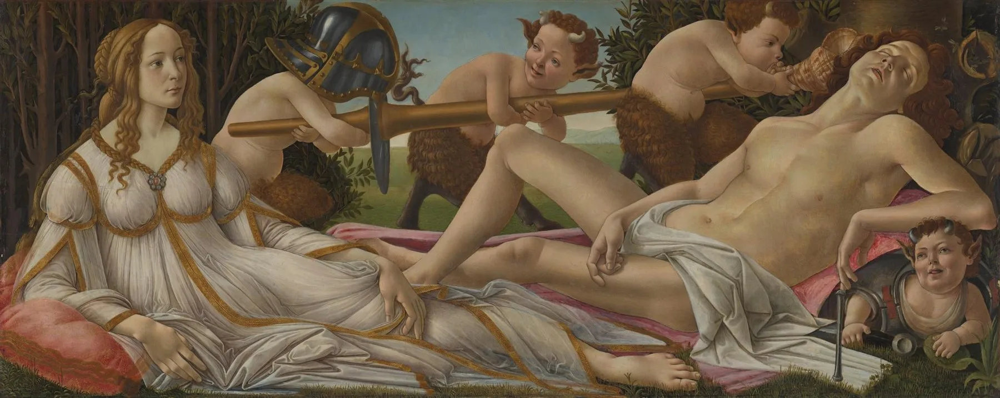
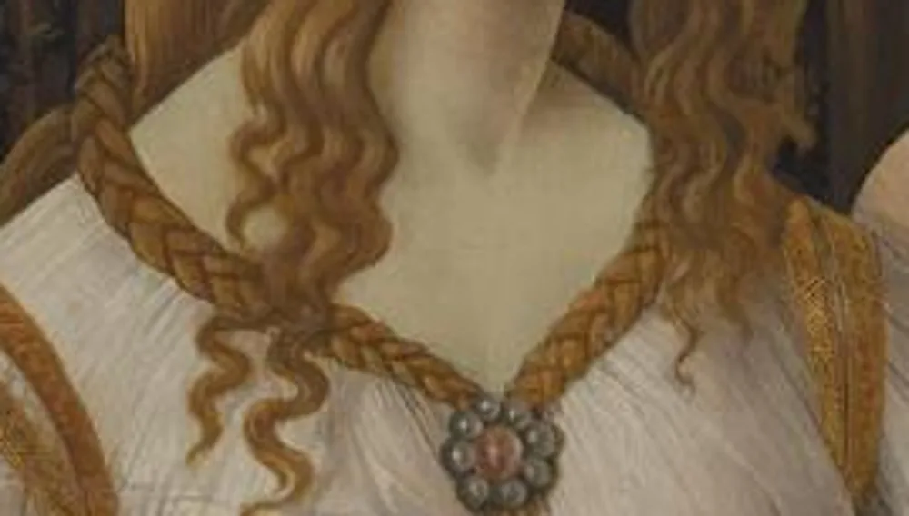
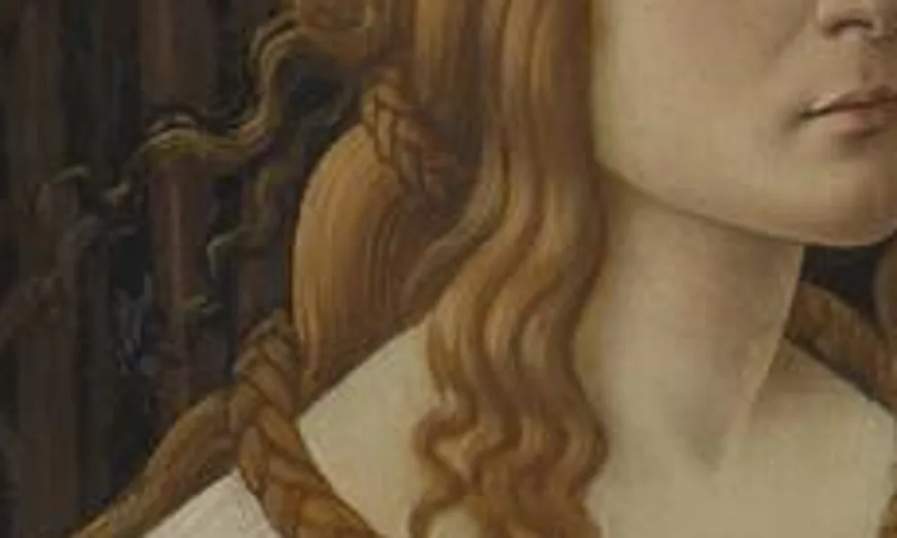
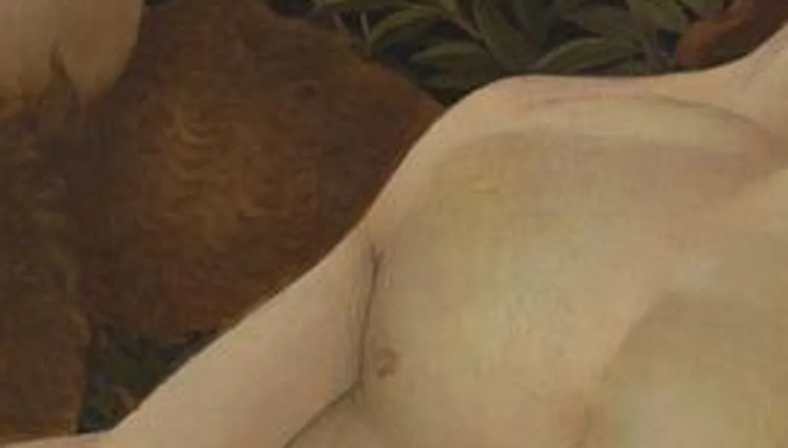
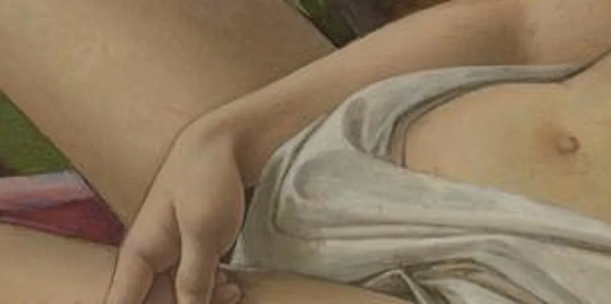
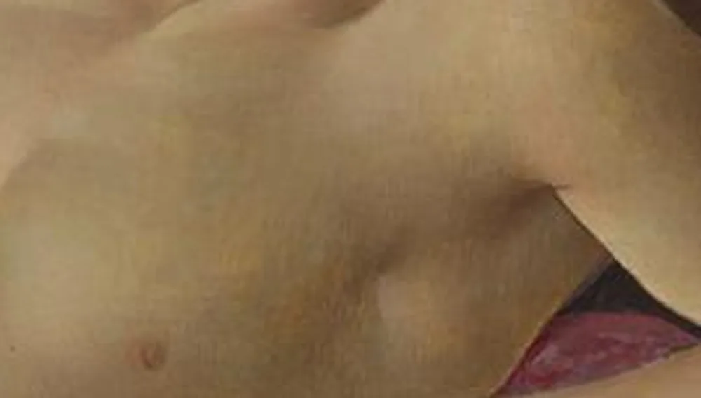
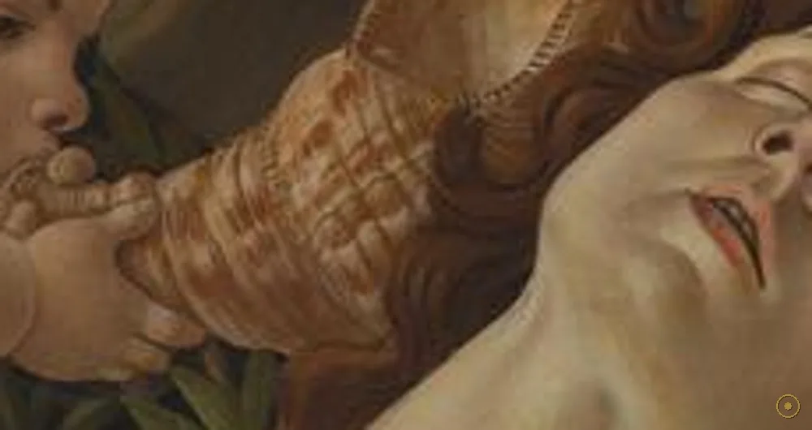
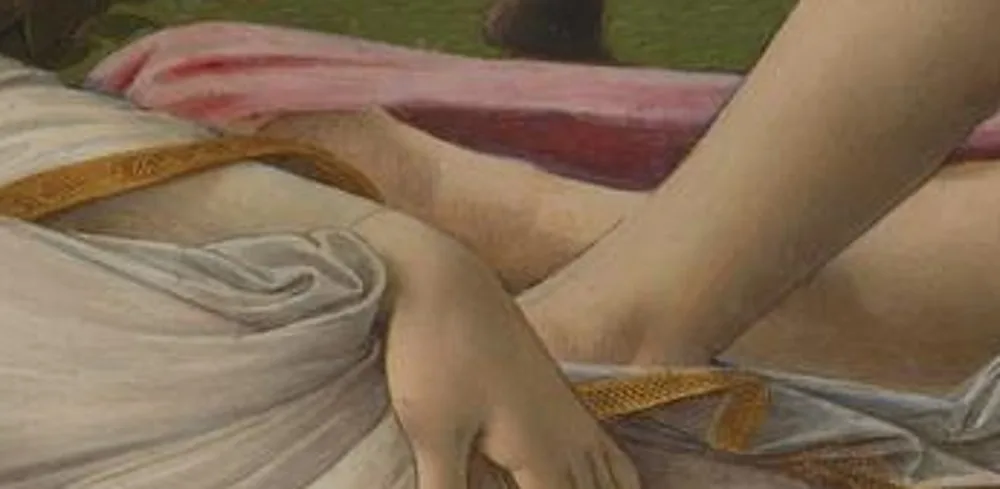
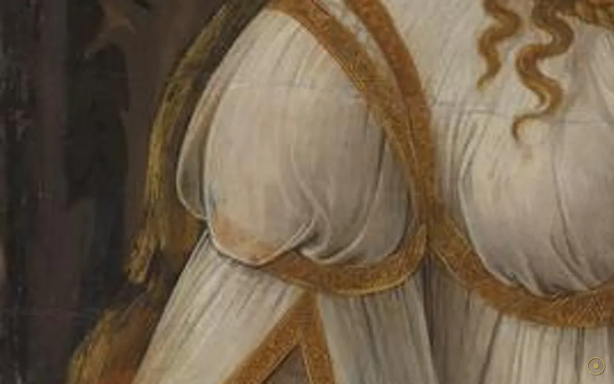

本页面展示的画作包含 艺术人体 / 裸体 内容。所录作品均为美术馆级公有领域馆藏，仅作艺术欣赏与学习之用，不含任何低俗或违规意图。
若您未满 18 周岁，或对此类内容感到不适，请点击「返回画廊」。点击「进入欣赏」即表示您已知悉上述说明，并同意仅作艺术欣赏之用。
约 1485 年，波提切利画下一幅狭长的木板：维纳斯睁着眼，战神玛尔斯酣然沉睡；几个半羊半童的萨提尔正拿着他的长矛、头盔与胸甲玩耍。这是一则古老的神话，却被文艺复兴的佛罗伦萨读成了「爱征服战争」——也就是和平。它很可能是一块挂在婚房墙上的嵌板（spalliera），为新婚夫妇送上「爱终将胜过冲突」的祝词。
故事来自荷马：维纳斯（爱与美之神）与战神玛尔斯偷情，被丈夫火神伏尔甘用网捉奸示众。但到了文艺复兴，这个故事的重点被改写——人们更看重「爱能驯服战争、从而带来和平」的寓意，玛尔斯被画成被爱彻底卸下武装、昏沉睡去的模样。
画幅又长又矮（约 69 × 173 厘米），这种形制叫 spalliera：嵌在卧室（camera，一种半公开的接待室）墙上的木板。它要在肩高处被人仰望，所以人物被压得很扁、铺得很开——既气派，又适合凑近了看细节。
艺术史家指出，画里的萨提尔可能来自学者诗人波利齐亚诺的诗（他提到「小山羊脚的萨提尔」），而萨提尔戏弄兵器的构图，又呼应古罗马作家卢西安对「亚历山大与罗克珊娜婚礼」的描述（小爱神们摆弄亚历山大的甲胄）。波提切利把神话、古典学识与婚礼祝贺，揉进了一幅画里。
—— 据伦敦国家美术馆官方释读及 Ettore Camesasca / 主流波提切利研究（转译）
波提切利画下的，不是一场战役，而是战争被爱放倒后、那片刻的安宁。
画面里每个元素都在说话：维纳斯清醒的眼神、玛尔斯瘫软的手指、被萨提尔拿走的兵器、树上的马蜂窝。点击光点，看爱是怎样一步步解除了战争的武装。

点击画面中的 ✦ 光点 查看画中细节 · 图片来源：National Gallery, London（公有领域）
从美第奇圈子的订件，到几世纪的注脚，再到今天的「和平图腾」——这幅画的命运，随它所在的时代而变。
约 1485 · 佛罗伦萨订件
波提切利在美第奇圈子最成熟的年代，受（很可能是）韦斯普奇或其他显贵之家委托，画下这块 spalliera 嵌板，作为婚房里的祝贺与装饰。
➤1485–1874 · 沉寂
在男权主导的艺术史叙事里，它长期被视为「轻巧的神话小品」；玛尔斯被读成情色玩笑的主角，维纳斯的深意被压在注脚里。
➤1874 至今 · 翻身
入藏伦敦国家美术馆后，伴随女性主义与和平主义的解读兴起，此画被视为「爱征服战争」的最早、最优雅的图像之一；今天，它是波提切利最被喜爱的作品之一。

其一 · 真实的古典母题。维纳斯与玛尔斯偷情、被捉奸的故事出自荷马；波提切利只是把重心从「丑闻」挪到了「爱驯服战争」——同样的故事，被文艺复兴读成了和平。
其二 · 尺寸的宣言。69 × 173 厘米的狭长木板，是专门嵌进婚房墙面的 spalliera；它要被人仰头、凑近看，所以人物被压扁铺开，细节塞得满满当当。
其三 · 会「变暗」的蛋彩。和所有老画一样，表面清漆随岁月氧化发黄，今天的暗背景比原来更深沉；我们以为的「褐」，部分是时间替他加的一层滤镜。
※ 「韦斯普奇双关（vespa=马蜂）」「波利齐亚诺诗歌源流」「卢西安婚礼描述的古典范本」均为主流艺术史通说或考证。玛尔斯的「后戏式昏睡」解读见 Ronald Lightbown 等研究；画中细节以国家美术馆官方释读为准。
把这场「和平」拆开，每个元素都有自己的重量；而真正的主角，是那个睁着眼、赢了的人。
侧卧支颐、目光清醒——胜利的，是爱，不是战争。

金发、金线镶边、难以脱下的衣裙，强调她的贞静与美。

仰头张嘴、肌肉如古典雕像——再勇武也被爱弄得昏沉。

铁胸甲成了枕头，萨提尔钻进底下——武器被解除。

海螺（维纳斯之符号）凑到耳边猛吹，玛尔斯仍沉睡。

vespa=马蜂，暗指韦斯普奇家族，也象征爱的刺痛。

萨提尔们扛走长矛——战争的工具离了手。

维纳斯身后的桃金娘，是维纳斯与婚姻的传统象征。
波提切利身处洛伦佐·德·美第奇（豪华者）治下的佛罗伦萨，与当时的学者、诗人往来；古典学问与神话，是圈子里最时髦的谈资。
这类狭长木板嵌进婚房墙面，要在半公开的接待室（camera）里被仰望；题材须体面、有趣、有学问——维纳斯与玛尔斯正合适。
在文艺复兴人文主义里，爱（与美）被看作能驯服暴力、带来和谐的力量；此画是这一信念最优雅的图像之一。
十九世纪前它被视为轻巧小品；二十世纪起，伴随女性主义与和平主义解读，维纳斯「清醒的胜者」身份被重新看见。
受（很可能）韦斯普奇或显贵之家委托，画成婚房 spalliera 嵌板。
长期被视为神话小品，玛尔斯被读成情色玩笑主角，深意被压在注脚。
由伦敦国家美术馆购入（NG915），逐渐进入公众视野。
女性主义与和平主义解读兴起，被重读为「爱征服战争」的优雅图像。
与《维纳斯的诞生》《春》并列，成为波提切利最被喜爱的作品之一。